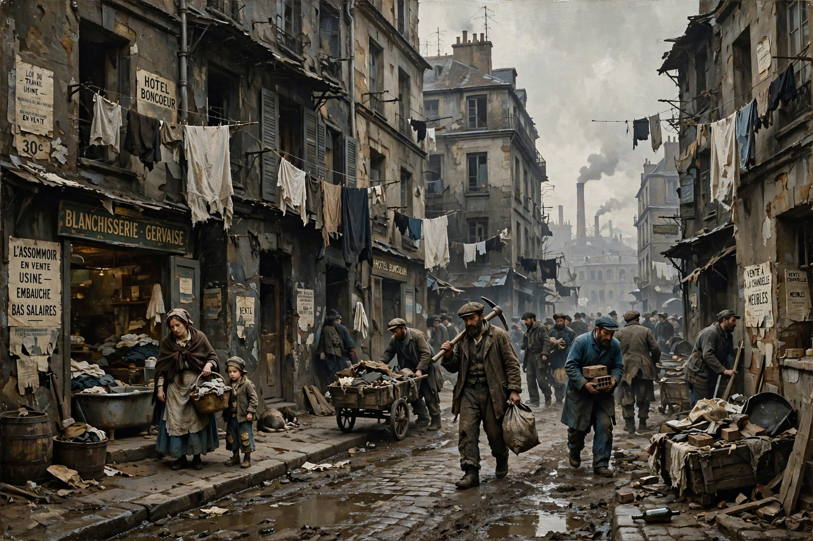

Active: c. 1860s–1900s and beyond
Key figure: Émile Zola
Influences: Realism, Darwinism, determinism
Notable authors: Zola, Stephen Crane, Frank Norris, Theodore Dreiser, Richard Wright
Naturalism is a literary movement that emphasizes observation and the scientific method in the exposition of reality. Building on realism, naturalist writers applied ideas of heredity and environment — influenced by Charles Darwin and Hippolyte Taine — to depict characters whose lives are largely determined by forces beyond their control.
French novelist Émile Zola theorized the movement in The Experimental Novel (1880) and embodied it in his 20-novel Rougon-Macquart cycle, including L'Assommoir, Nana, and Germinal, tracing a family's degeneration through alcoholism, poverty, and industrial labor.
In the United States, Stephen Crane (Maggie: A Girl of the Streets, The Red Badge of Courage), Frank Norris (The Octopus), Jack London, and Theodore Dreiser (Sister Carrie, An American Tragedy) portrayed urban poverty, instinct, and economic forces. Richard Wright's Native Son (1940) is a later landmark.
Naturalist works often feature pessimistic determinism, detailed documentation of setting, lower-class or marginalized protagonists, and themes of survival, vice, and the indifferent universe.